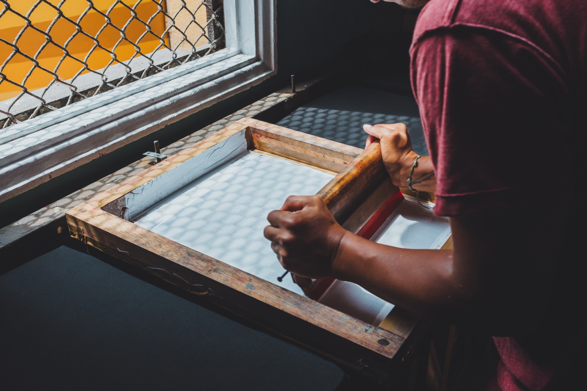
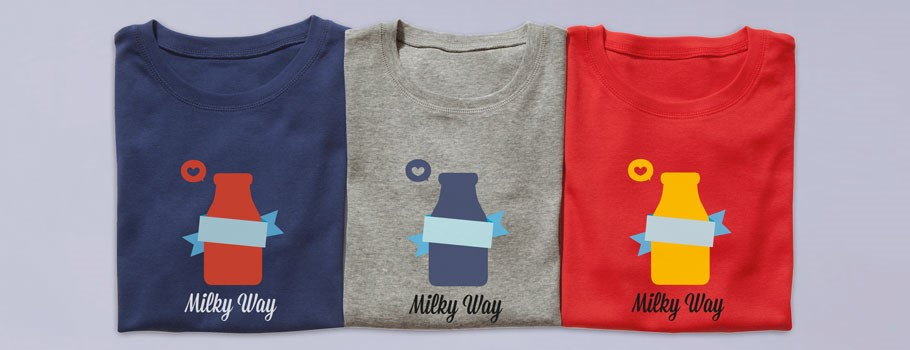
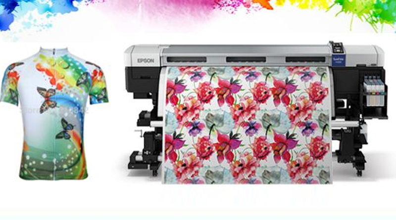

SERIGRAFÍA DIGITAL ¿CÓMO FUNCIONA?
De la serigrafía tradicional a la serigrafía digital
Para imprimir en telas existen varios métodos como sublimación impresión textil. El método más clásico y antiguo es la serigrafía tradicional.
La serigrafía tradicional y la serigrafía industrial usan marcos de serigrafía, es decir, cuadrados de tela permeable que se tensan en bastidores rígidos y dejan pasar la tinta a la superficie de la tela colocada debajo. Este método garantiza una ejecución muy rápida y una calidad excelente, pero para la preparación del marco es necesario un trabajo manual, además de un gasto inicial que no se amortiza hasta que se imprimen tiradas grandes con el mismo diseño.
La serigrafía digital «resuelve» estos puntos débiles de la impresión tradicional: permite imprimir tiradas muy reducidas, de incluso una sola unidad, manteniendo los precios económicos. Vamos a ver cómo funciona
Cómo funciona la serigrafía digital Kornit
Para imprimir digitalmente, primero la máquina aplica en la tela una solución que permite que la tinta permanezca impresa en esta superficie en concreto. En el argot técnico, esta solución se llama «imprimación» y se compone únicamente de ácido acético.
De esta forma, la superficie de la tela se prepara para recibir y retener un tipo de tinta especial en cuatricromía adecuada para la impresión textil. A continuación, se seca la tela con aire caliente.
El diseño o elemento gráfico que va a imprimir el ordenador pasa directamente a la impresión. Al hacerlo, esta tecnología tiene la ventaja de evitar la preparación manual del marco y, por tanto, permitir al cliente prácticamente cambiar el diseño impreso en la tela en cada prenda que pasa por la maquinaria.
La tecnología que usamos desde hace más de cinco años en Pixartprinting para la impresión digital en tela es la desarrollada por Kornit, una multinacional especializada en la innovación en este sector concreto de la impresión textil.
Imprimir una camiseta con
Gracias a este sistema, se puede imprimir el diseño y la imagen que se quiera en prendas de distintos tipos: las clásicas camisetas, gorras, banderas o fundas de tela para ropa.
En el catálogo de artes publixitarias puedes encontrar, por ejemplo, la impresión digital en camisetas. Puedes decidir si imprimir en el anverso, el reverso o en ambos lados de tu prenda. Y, gracias a la tecnología digital, puedes realizar la impresión de una sola camiseta. El precio sigue siendo económico, en torno a los 6$ dolares, incluso en el caso de imprimir solo una prenda.